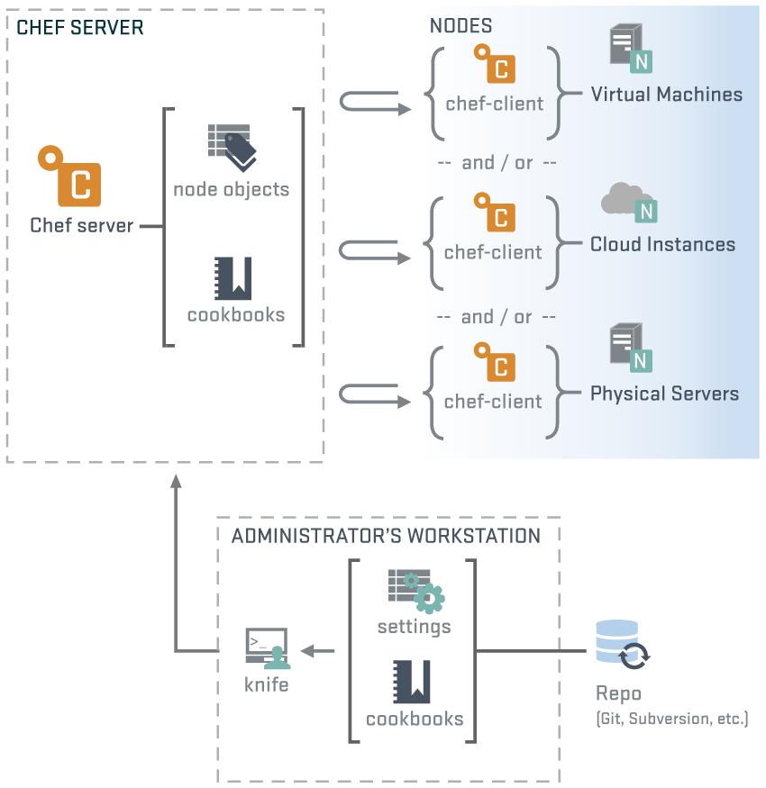

Automação de Infra
com
Por Hugo Cisneiros | http://www.devin.com.br
Movile | www.movile.com
Infraestrutura
Um programa que tem que dar certo

Podemos considerar a infra como um código! Mas como?
Começa simples
- Algumas máquinas rodam alguns sistemas isolados
- Um sysadmin pra gerenciar tudo
- Poucos serviços e scripts de manutenção
Vai crescendo...
- Muitas máquinas e serviços diferentes, começa a surgir a palavra padrão
- Uma equipe de sysadmins
- Legados e sistemas novos convivendo juntos
Se torna um monstro!
- Centenas ou milhares de servidores, vários serviços entrelaçados
- Muitos sysadmins e DevOps em diversos setores, cada um pensando de um jeito
- Dezenas de padrões diferentes O_o
Quando você se dá conta:


Por que não fazer da
sua Infra um código?
Opscode chef
- Sua infraestrutura vira código (Ruby), inclusive com versionamento (git)
- Você pode definir padrões de código assim como em um sistema
- Alguns usuários conhecidos: Amazon, Facebook, IGN, Mercado Livre, Splunk, Dreamhost
1 - Gerenciamento de configuração
- Como os serviços são configurados (sim, os arquivos de configuração)
- Configurações são definidas e versionadas, colocadas nas máquinas sempre
- Se alterações locais são feitas, o chef sobrescreve com a versionada novamente
2 - Gerenciamento de cloud
- Com configurações e serviços já definidos, coloca-se e retira-se máquinas automaticamente
- O chef se integra com as principais clouds públcias (e frameworks privados)
- Infraestrutura repetitiva
3 - Entrega contínua
- Com a infraestrutura e deploys já definidos, pode-se automatizar os deploys
- Como os deploys são padronizados, equipes de desenvolvimento podem mudar versões e o pacote vai automaticamente
- Com a lógica de infra do sistema, pode-se pesquisar quem roda o que e onde
- Com o versionamento, pode-se saber quais modificações foram feitas, quando e por quem
Automação de Infra é isso
Atenção!
Nem tudo são flores! Você não vai resolver todos os problemas da sua infraestrutura como se fosse mágica!

Problemas com códigos
- Uma boa curva de aprendizado para codificar sua infraestrutura
- Diferentes pessoas podem fazer diferentes códigos e lógicas
- Uma modificação BUGOSA feita na automação pode espalhar o bug em toda a infra
Escalonamento
- Código (e infra) pode ficar complexo demais ao escalonar
- É preciso saber o que fazer na automação e o que fazer fora dela

Mas chega de brincadeiras!
Mão na massa!
Instalação

Instalação
- A partir do 11.x, pacotes auto-contidos para as principais distribuições
- Instalação fácil, colocada no /opt/chef e /opt/chef-server.
Configurações
Configurações do repositório
- Criamos um novo repositório git ou clonamos o da opscode
- Esse passo não é necessário mas extremamente recomendável para se ter controle do código
Configurações dos usuários
- Podemos configurar um novo usuário via knife: knife configure -i
- Ou por WebUI, no servidor do chef, porta 443. O WebUI nada mais é que um front-end Web para a API
- Com o usuário criado, vários comandos do knife se tornam disponíveis (veremos depois)
Configurações dos nós/clientes
- Copiamos o chef-validator.pem (chave privada) do servidor
- Rodamos o comando chef-client, especificando a RunList
Livros de receitas (cookbooks)
- É o conjunto de regras de negócio que você quer transmitir
- Contém exatamente o que o chef-client tem que verificar e executar na máquina
Atributos
- São variáveis usadas dentro de um cookbook
- Especificam coisas que podem mudar: parâmetros de configuração, nomes de serviços e diretórios distintos entre várias distribuições, entre outros
Roles
- Especificam o que uma máquina será
- Podem conter um conjunto de cookbooks e outras roles, aplicadas à uma ou mais máquinas
- Exemplo: uma role dynamic-webserver pode conter os cookbooks: apache2, mysql, php5, python, tomcat.
Criando um novo cookbook
Estudando outros cookbooks
A faca! O comando knife

- O comando knife é extremamente poderoso e lida com toda a base de dados do chef
A faca! O comando knife
- Algumas coisas que ele faz: executa comandos em grupos de máquinas via ssh; lista e atualiza os cookbooks, nós, usuários, roles, ambientes, databags; mostra informações de inventário dos servidores; gerencia as runlists; gerencia tags; mostra status dos clientes/nós do chef
O melhor link
E o prêmio para melhor link vai para:
Outros links
Dúvidas? Exemplos?

Podem judiar do palestrante!
Obrigado! :)
Por Hugo Cisneiros | http://www.devin.com.br
Movile | www.movile.com
Gifs divertosas tiradas do DevOps Reactions